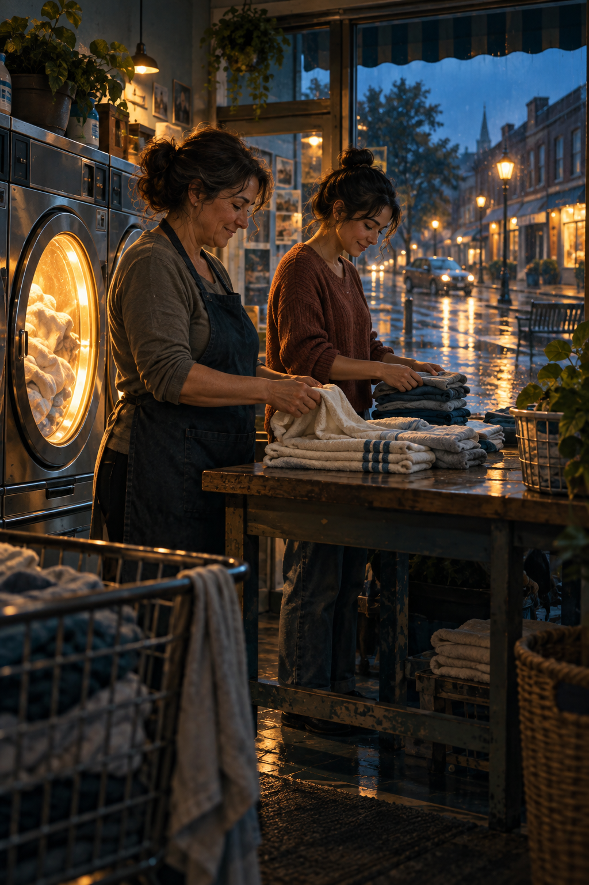

The Apartment Above the Laundromat
After a flood closes her mother’s shop, June follows customer messages and city records to recover more than the lost clothes.
The Waterline
When the river rose into her mother's laundromat, June Park was in a sound booth three neighborhoods away, trying to remove traffic noise from an advertisement for luxury apartments. The client wanted the city to sound peaceful. June spent two hours erasing buses and voices. By the time she checked her phone, her brother had left seven messages. The seventh contained only water and his breathing.
She reached the shop after midnight. The blue sign still glowed above a street full of brown water. Her mother, Hana, stood on the curb holding a cash box and a cardboard carton of customer tickets. Leo had carried the machines' payment drawer upstairs and was trying to keep it dry. Water lapped at the first stair of the apartment where June had grown up.
'You shouldn't have come in those shoes,' Hana said. It was the first thing she said to June after three months of strained Sunday calls. June looked at her thin sandals and laughed because the alternative was crying.
The firefighters ordered everyone back. June followed her mother to a school gym where families slept on folding cots. Hana placed the carton of tickets beneath her pillow. In the morning she asked June to check the dryers. They were still underwater. Insurance would cover some equipment, but not the wages Hana owed for the previous week or the clothes she had promised ready by Friday. June thought of the condo advertisement she had spent the day making perfect. Its building stood on higher ground beside the river, behind a wall paid for by the city.
A man in a clean coat came to the gym at noon. His name was Daniel Rusk. He owned the building and had leased the ground floor to Hana for nineteen years. He carried an envelope with an offer: take a cash settlement, leave within thirty days, and release him from repair obligations. Hana read it once and folded it small.
The rest of the story is omitted from this design preview.
Comments
Write a comment...